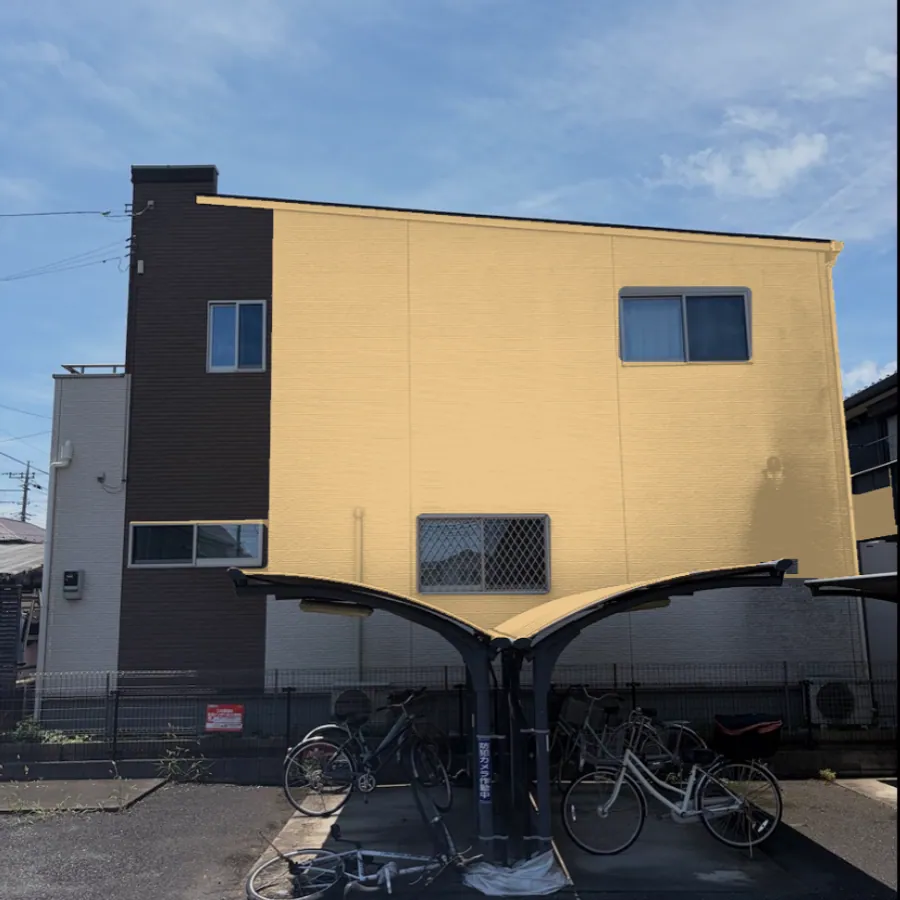
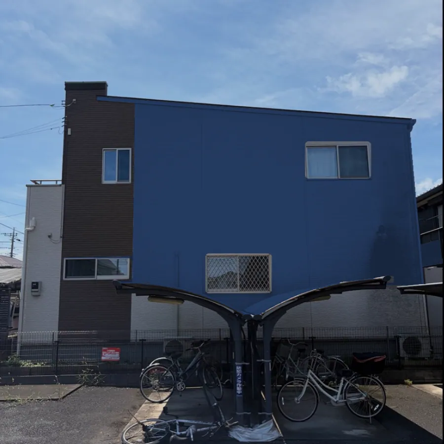

1
30秒で概算費用を確認
建物の大きさと屋根の検討状況を選ぶだけ。氏名や電話番号を入力せず、その場で費用の目安を確認できます。
無料で概算費用を確認する →桶川市・北本市・上尾市を中心に対応
状態確認から施工後のアフターフォローまで、代表の大川が一貫して対応します。
SIMULATOR30秒で概算費用をチェック→無料・氏名や電話番号の入力不要
写真・図面なしで使えます。

First step
急いで工事を決める必要はありません。ご希望の方法から、無理なく費用の目安をご確認ください。
建物の大きさと屋根の検討状況を選ぶだけ。氏名や電話番号を入力せず、その場で費用の目安を確認できます。
無料で概算費用を確認する →資料がそろっていなくても、まずはLINEでご相談ください。具体的な概算に必要な写真や図面を順にご案内します。
写真・図面の相談方法を見る →実際の状態を確認して、必要な工事と正確なお見積もりを分かりやすくご説明します。
現地調査を相談する →Site guide
費用の目安だけでなく、工事内容、カラーシミュレーター、会社情報まで、必要な情報へすぐ進めます。
無料カラーシミュレーター
お住まいの写真で、気になる外壁の色を試せます。写真が手元になくても、サンプルで始められます。
無料で外壁の色を試してみる →登録不要。気になった画像は保存して、LINEで相談できます。


同じサンプル写真を当サイトのシミュレーターで色変更した例です。施工後の写真ではありません。実際の色は色見本などでご確認ください。
Works
地域のお住まいで実際に行った工事を、施工前後の写真と基本情報とともにご紹介します。

Why Real Make
状態確認から施工後のアフターフォローまで、代表の大川が一貫して対応します。見えない工程も、写真とともに分かりやすくお伝えします。
Customer voice
説明や工事中の連絡、仕上がりについて、実際にいただいたクチコミの一部をご紹介します。
Googleクチコミ 5.0（19件）2026年9月5日時点
見積りの段階から丁寧な説明をしてくれて、工事中の報告や気づいたことを教えてくれたりと安心してお任せすることができました✨
途中経過を写真有りでこまめに連絡くれる
完成の日は感じていたワクワク感以上の出来栄えで、沢山考えたからこそ愛着のある我が家になり、まるで新築の時の様な感動でした。
Field blog
塗装や住まいの工事で行ったことを、写真とともに更新しています。気になる症状を知る入口としてもご覧いただけます。
Service area
桶川市・北本市・上尾市のほか、鴻巣市・伊奈町・蓮田市・白岡市・久喜市・川越市・川島町・吉見町・さいたま市などへ伺います。上記以外の埼玉県内の地域についても、まずはお気軽にご相談ください。現地確認から施工後のご相談まで、代表の大川が直接対応します。